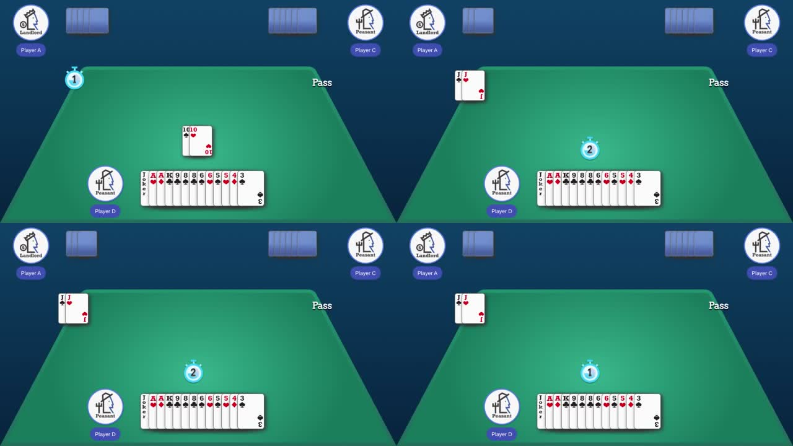

Game companionship as two interaction modes
CoPlay: Learning When to Speak and What to Say as Game Companions
For a game companion, what to say and when to say it are one decision — and for most of a session the right decision is silence.
Question-driven video benchmarks pose the question, so they score the answer and never the decision to intervene. CoPlayBench scores that decision: 818 first-person videos from nine games carry 5,153 annotated events, each with a speaking window, success criteria and a reference reply. CoPlayer still fails about two thirds of advice questions.
The player asked
It has to read the screen, not just answer.


“Is my energy holding up”
Skull Cavern floor 98–99; the energy bar is low and the player keeps mining.
CoPlayer sound · support 4/4
It's getting low! Eat something before swinging again, don't pass out in the mine emoji omitted
Reads the low energy bar and says eat before swinging again.
GPT-5.6-Sol not sound · support 0/4
Yeah, your energy’s still comfortably above half—plenty left for more mining.
Calls the bar comfortably above half; says keep mining.must-not violation: Say "you're fine, mine away"
DeepSeek-V4.1-Flash not sound · support 0/4
Energy's still solid, you're fine. Just keep an eye on the clock — it's 4:30, so start heading for the ladder soon.
Calls the energy solid; only warns about the clock.must-not violation: Say "you're fine, mine away"
Nobody asked
It has to notice the moment itself.

No question was posed.
The Landlord is down to 3 cards after a pair of Jacks.
CoPlayer sound · support 4/4
Slam the AA! He's down to 3, grab the lead emoji omitted
Names the only correct play and the reason to take the lead.
GPT-5.6-Sol not sound · support 0/4
A answered with pair jacks; pass here—your aces can beat them, but they’re worth saving.
Says pass and save the aces; judged a must-not violation.must-not violation: Suggest passing
DeepSeek-V4.1-Flash not sound · support 0/4
Clock's at 1 — play something now or you'll get auto-passed!
Only warns about the timer; no play is named.must-not violation: Suggest passing
34.3%
StratEmo
sound advice and fitting support, on the 7,037 advice questions of 9,103
14.5% best of eight frontier models (Gemini-3.8) · 4.7% before training · 99.1% for the reference replies
+43.7 pp
TimingLift
unprompted lines landing inside required windows, above a frequency-matched random speaker
+28.0 pp best frontier model (GPT-5.6) · 0 pp for the random speaker by construction
55.1
GroundF1
must-mention F1, with wrong claims counted as false positives
42.1 best frontier model (GPT-5.6) · 26.7 → 48.8 → 55.1 across base, supervision and reinforcement learning
Two modes, one decision
Answer when asked; the rest of the time, decide for yourself.
Both tracks show only what the player has seen: no game state, no audio, no future frames. The reactive track answers a posed question from 16 frames of the preceding 60 seconds. The proactive track watches the stream after one opening request and, every Δt seconds, decides whether to speak, what to say and what to note in a memo of at most 25 words.
Only the first of those two has ever been scored before, and the second is where a companion is made or lost.
- Grounded in what is on screen. An unprompted line has to concern the player's next decision, not describe the scene.
- Supportive of this player, now. Support earns credit only when it is tied to the situation and matches the expected tone.
- Delivered while the event is still actionable. A window that passes while the model generates counts as missed.
- Withheld when silence is better. Required windows cover 7.4% of Bench video time; the rest of the session is quiet.
CoPlayer sound · support 3/4
Another huge wave! Don't hoard sun, add Bonk Choys and Wall-nuts now emoji omitted
Warns of the wave and names Bonk Choys and Wall-nuts.
GPT-5.6-Sol not sound · support 1/4
Huge wave incoming with only 25 sun—grab those suns fast and reinforce lane four, where the armored zombie is deepest.
Warns of the wave but sends the defense to lane four.
DeepSeek-V4.1-Flash not sound · support 0/4
Sun's down to 25 and a zombie's chewing your right-side Threepeater — hold off on planting, let the lane clear first.
Misses the wave and says hold off planting.
One recorded event: Plants vs. Zombies 2 at the 136-second decision step, where a Huge Wave is announced. Drag the reading head. The marks are this video’s recorded decision steps from the authors’ own figure source, not a delivery-time animation and not an average.
Why it is hard
Most of a session is quiet, and that is the point.
A benchmark that poses every question can never test restraint. In CoPlayBench the windows are narrow and rare, so a model that talks constantly scores badly on purpose.
One Honor of Kings session · 16 minutes
7.4%
of Bench video time sits inside a required speaking window. For the other 92.6%, saying nothing is the correct answer — which is why a benchmark that poses every question cannot score a companion.
The pace differs sharply by game. Dou Dizhu needs a reply for 27.0% of its video and leaves a median 4.2 s to speak; Stardew Valley leaves 8 s but its windows cover 0.8%.
Nine games, nine different timing problems.
Card and board games concentrate required windows into a narrow slice of play; visual games spread them thinly across long quiet stretches. A companion has to handle both.
CoPlayBench
Every score is tied to one annotated event.
Identifying the moments worth attention is subjective, so each video is annotated independently three times and only agreed events survive. Three frontier models mark events; those marked by at least two are retained, 21,494 identified down to 15,689 agreed; three master's-level human annotators then keep only the ones they unanimously judge appropriate.
Each retained event carries a time span, a tier, a speaking window, up to three questions, must-mention points, forbidden statements, a tone, a word limit and a reference reply — all written from information available before the window closes.
One retained event
![Two-part diagram. (a) Building CoPlayBench: 2,534 first-person videos from 9 games are annotated independently by Claude-Opus-5.5, GPT-6.1-Sol and Gemini-4-Argon; events whose time spans overlap are retained, 21,494 to 15,689 events. One retained Honor of Kings teamfight shows a player question, a 728 to 732 second pre-event alert window, a reference reply and a must-not item. (b) Evaluation: the reactive track answers from 16 frames of the last 60 seconds and is scored on game, player and time; the proactive track observes every step, and a timeline shows two required windows hit and one missed.](assets/figures/coplaybench-figure2.png)
Evaluation protocol
Raw recall rewards talking, so timing is scored against a random speaker.
Two metrics carry the paper's claims, and both are built to resist the obvious shortcut. Each model's filled dot is its Recall; the open dot below it is a random speaker placing the same number of lines uniformly over the same stream. The amber bar between them is TimingLift — and it is what separates targeted intervention from talking a lot.
advice and support arriving together
StratEmo counts only the top-left cell, over the 7,037 advice questions. The reference replies reach 99.1 on it, so the criterion is met when the advice is actually right.
TimingLift is not confound-free: fewer observed frames mean fewer chances to speak, so SeenRate and Recall-O describe observed-window recall and do not separate perception from timing.
Results
Frontier models read the game, then fail at the judgment a companion is for.
Switch the metric. The pattern holds across both tracks: the tested models describe what is on screen competently, supervision closes much of the remaining gap and reinforcement learning closes a little more. These are observed checkpoint differences, not a controlled attribution to one behaviour — and on restraint, CoPlayer is not first.
Sound advice and support of at least 3 of 4, in the same reply.
The best frontier model is not the same model in every column: Gemini-3.8-Flash on StratEmo, GPT-5.6-Sol on GroundF1 and TimingLift. With each provider's reasoning switch off, hidden reasoning still appears on 52.5% of reactive calls to Gemini-3.8-Flash — the model that sets the 14.5 comparator — and on 4.2% for Claude-Sonnet-5.5 and 0.2% for Kimi-K3.
Five metrics at once, by rank.
Darker is a better rank within each column. CoPlayer leads TimingLift and StratEmo; Base leads raw Recall by speaking far more often; SFT is the quietest. Local OnTime is not shown because local latency is not comparable with the historical API timings.
| Model | When to speakRecall ↑ | When to speakTimingLift ↑ | What to sayStratEmo ↑ | Quiet and fastNoiseRate ↓ | Quiet and fastOnTime ↑ |
|---|---|---|---|---|---|
| Gemini-3.8 | 40.5 rank 11 of 11 | +22.7 rank 5 of 11 | 14.5 rank 3 of 11 | 0.64 rank 2 of 11 | 19.6 rank 2 of 8 |
| GPT-5.6 | 73.9 rank 2 of 11 | +28.0 rank 3 of 11 | 7.9 rank 7 of 11 | 2.25 rank 6 of 11 | 17.0 rank 4 of 8 |
| Claude-Sonnet | 66.3 rank 6 of 11 | +20.8 rank 6 of 11 | 8.8 rank 5 of 11 | 2.79 rank 7 of 11 | 18.1 rank 3 of 8 |
| Doubao-2.1 | 73.9 rank 2 of 11 | +18.6 rank 7 of 11 | 6.8 rank 8 of 11 | 4.72 rank 9 of 11 | 15.8 rank 5 of 8 |
| Qwen3.8-Max | 57.0 rank 7 of 11 | +16.2 rank 9 of 11 | 12.3 rank 4 of 11 | 3.26 rank 8 of 11 | 10.6 rank 7 of 8 |
| Kimi-K3 | 40.6 rank 10 of 11 | +14.7 rank 10 of 11 | 8.6 rank 6 of 11 | 1.76 rank 4 of 11 | 14.6 rank 6 of 8 |
| DeepSeek-V4.1 | 72.1 rank 4 of 11 | +11.3 rank 11 of 11 | 6.4 rank 9 of 11 | 4.98 rank 10 of 11 | 29.4 rank 1 of 8 |
| HY4 | 55.1 rank 8 of 11 | +16.3 rank 8 of 11 | 5.7 rank 10 of 11 | 2.10 rank 5 of 11 | 10.3 rank 8 of 8 |
| Qwen3.8-27B | 84.0 rank 1 of 11 | +25.6 rank 4 of 11 | 4.7 rank 11 of 11 | 5.75 rank 11 of 11 | n/a not comparable |
| CoPlayer (SFT) | 55.0 rank 9 of 11 | +39.9 rank 2 of 11 | 29.0 rank 2 of 11 | 0.45 rank 1 of 11 | n/a not comparable |
| CoPlayer | 67.4 rank 5 of 11 | +43.7 rank 1 of 11 | 34.3 rank 1 of 11 | 0.97 rank 3 of 11 | n/a not comparable |
| Model | When to speakRecall ↑ | When to speakTimingLift ↑ |
|---|---|---|
| Gemini-3.8 | 40.5 rank 11 of 11 | +22.7 rank 5 of 11 |
| GPT-5.6 | 73.9 rank 2 of 11 | +28.0 rank 3 of 11 |
| Claude-Sonnet | 66.3 rank 6 of 11 | +20.8 rank 6 of 11 |
| Doubao-2.1 | 73.9 rank 2 of 11 | +18.6 rank 7 of 11 |
| Qwen3.8-Max | 57.0 rank 7 of 11 | +16.2 rank 9 of 11 |
| Kimi-K3 | 40.6 rank 10 of 11 | +14.7 rank 10 of 11 |
| DeepSeek-V4.1 | 72.1 rank 4 of 11 | +11.3 rank 11 of 11 |
| HY4 | 55.1 rank 8 of 11 | +16.3 rank 8 of 11 |
| Qwen3.8-27B | 84.0 rank 1 of 11 | +25.6 rank 4 of 11 |
| CoPlayer (SFT) | 55.0 rank 9 of 11 | +39.9 rank 2 of 11 |
| CoPlayer | 67.4 rank 5 of 11 | +43.7 rank 1 of 11 |
| Model | What to sayStratEmo ↑ | Quiet and fastNoiseRate ↓ | Quiet and fastOnTime ↑ |
|---|---|---|---|
| Gemini-3.8 | 14.5 rank 3 of 11 | 0.64 rank 2 of 11 | 19.6 rank 2 of 8 |
| GPT-5.6 | 7.9 rank 7 of 11 | 2.25 rank 6 of 11 | 17.0 rank 4 of 8 |
| Claude-Sonnet | 8.8 rank 5 of 11 | 2.79 rank 7 of 11 | 18.1 rank 3 of 8 |
| Doubao-2.1 | 6.8 rank 8 of 11 | 4.72 rank 9 of 11 | 15.8 rank 5 of 8 |
| Qwen3.8-Max | 12.3 rank 4 of 11 | 3.26 rank 8 of 11 | 10.6 rank 7 of 8 |
| Kimi-K3 | 8.6 rank 6 of 11 | 1.76 rank 4 of 11 | 14.6 rank 6 of 8 |
| DeepSeek-V4.1 | 6.4 rank 9 of 11 | 4.98 rank 10 of 11 | 29.4 rank 1 of 8 |
| HY4 | 5.7 rank 10 of 11 | 2.10 rank 5 of 11 | 10.3 rank 8 of 8 |
| Qwen3.8-27B | 4.7 rank 11 of 11 | 5.75 rank 11 of 11 | n/a not comparable |
| CoPlayer (SFT) | 29.0 rank 2 of 11 | 0.45 rank 1 of 11 | n/a not comparable |
| CoPlayer | 34.3 rank 1 of 11 | 0.97 rank 3 of 11 | n/a not comparable |
Table 2 When asked, models read the game but rarely give the right advice in the right tone, and rarely in time.
The full reactive table, so the headline can be audited. Frontier models get verifiable facts right 63.7% to 78.2% of the time, yet pair sound strategy with fitting support on at most 14.5% of advice questions. CoPlayer reaches 34.3%, against 4.7% for the untrained base model — and the reference replies score 99.1.
| Game | Player | Time | Rules | ||||||||
|---|---|---|---|---|---|---|---|---|---|---|---|
| Model | GroundF1↑ | StratAcc↑ | FactAcc↑ | EmoAcc↑ | SupQual↑ | StratEmo↑ | TTFT↓ | TTUA↓ | OnTime↑ | Violation↓ | LenOK↑ |
| HY4 | 34.6 | 24.7 | 70.4 | 47.4 | 36.4 | 5.7 | 5.9 | 7.0 | 10.3 | 25.3 | 84.1 |
| DeepSeek-V4.1-Flash | 31.4 | 25.5 | 63.7 | 44.6 | 34.5 | 6.4 | 1.9 best of the eleven models | 2.2 best of the eleven models | 29.4 best of the eleven models | 30.6 | 74.0 |
| Doubao-Seed-2.1-Pro | 34.3 | 21.7 | 70.6 | 57.0 | 37.8 | 6.8 | 3.3 second best | 4.1 second best | 15.8 | 25.0 | 96.3 |
| GPT-5.6-Sol | 42.1 | 29.3 | 78.2 second best | 51.9 | 40.8 | 7.9 | 5.2 | 5.1 | 17.0 | 21.0 | 90.5 |
| Kimi-K3 | 33.4 | 23.9 | 68.2 | 54.3 | 39.0 | 8.6 | 3.9 | 4.9 | 14.6 | 30.0 | 75.4 |
| Claude-Sonnet-5.5 | 38.6 | 32.8 | 73.5 | 42.3 | 37.8 | 8.8 | 4.8 | 5.5 | 18.1 | 26.9 | 50.9 |
| Qwen3.8-Max | 34.3 | 23.8 | 69.8 | 67.0 | 44.6 | 12.3 | 7.5 | 8.3 | 10.6 | 27.0 | 82.9 |
| Gemini-3.8-Flash | 39.7 | 31.1 | 69.0 | 54.8 | 41.1 | 14.5 | 4.7 | 4.8 | 19.6 second best | 25.9 | 94.0 |
| Local base and CoPlayer models | |||||||||||
| Base | 26.7 | 16.0 | 63.4 | 55.8 | 35.1 | 4.7 | 7.4† historical timing, not ranked | 20.2† historical timing, not ranked | 0.8† historical timing, not ranked | 30.9 | 81.9 |
| SFT | 48.8 second best | 38.6 second best | 67.7 | 83.2 second best | 57.4 second best | 29.0 second best | 5.4† historical timing, not ranked | 17.8† historical timing, not ranked | 0.9† historical timing, not ranked | 20.2 second best | 98.3 second best |
| CoPlayer | 55.1 best of the eleven models | 46.1 best of the eleven models | 84.5 best of the eleven models | 87.5 best of the eleven models | 61.5 best of the eleven models | 34.3 best of the eleven models | 6.4† historical timing, not ranked | 19.8† historical timing, not ranked | 0.5† historical timing, not ranked | 13.5 best of the eleven models | 99.0 best of the eleven models |
| Reference reply | 98.0 | 100.0 | 98.5 | 99.2 | 99.0 | 99.1 | –not reported | –not reported | –not reported | 0.4 | 99.0 |
| Game | |||
|---|---|---|---|
| Model | GroundF1↑ | StratAcc↑ | FactAcc↑ |
| HY4 | 34.6 | 24.7 | 70.4 |
| DeepSeek-V4.1-Flash | 31.4 | 25.5 | 63.7 |
| Doubao-Seed-2.1-Pro | 34.3 | 21.7 | 70.6 |
| GPT-5.6-Sol | 42.1 | 29.3 | 78.2 second best |
| Kimi-K3 | 33.4 | 23.9 | 68.2 |
| Claude-Sonnet-5.5 | 38.6 | 32.8 | 73.5 |
| Qwen3.8-Max | 34.3 | 23.8 | 69.8 |
| Gemini-3.8-Flash | 39.7 | 31.1 | 69.0 |
| Local base and CoPlayer models | |||
| Base | 26.7 | 16.0 | 63.4 |
| SFT | 48.8 second best | 38.6 second best | 67.7 |
| CoPlayer | 55.1 best of the eleven models | 46.1 best of the eleven models | 84.5 best of the eleven models |
| Reference reply | 98.0 | 100.0 | 98.5 |
| Player | |||
|---|---|---|---|
| Model | EmoAcc↑ | SupQual↑ | StratEmo↑ |
| HY4 | 47.4 | 36.4 | 5.7 |
| DeepSeek-V4.1-Flash | 44.6 | 34.5 | 6.4 |
| Doubao-Seed-2.1-Pro | 57.0 | 37.8 | 6.8 |
| GPT-5.6-Sol | 51.9 | 40.8 | 7.9 |
| Kimi-K3 | 54.3 | 39.0 | 8.6 |
| Claude-Sonnet-5.5 | 42.3 | 37.8 | 8.8 |
| Qwen3.8-Max | 67.0 | 44.6 | 12.3 |
| Gemini-3.8-Flash | 54.8 | 41.1 | 14.5 |
| Local base and CoPlayer models | |||
| Base | 55.8 | 35.1 | 4.7 |
| SFT | 83.2 second best | 57.4 second best | 29.0 second best |
| CoPlayer | 87.5 best of the eleven models | 61.5 best of the eleven models | 34.3 best of the eleven models |
| Reference reply | 99.2 | 99.0 | 99.1 |
| Time | |||
|---|---|---|---|
| Model | TTFT↓ | TTUA↓ | OnTime↑ |
| HY4 | 5.9 | 7.0 | 10.3 |
| DeepSeek-V4.1-Flash | 1.9 best of the eleven models | 2.2 best of the eleven models | 29.4 best of the eleven models |
| Doubao-Seed-2.1-Pro | 3.3 second best | 4.1 second best | 15.8 |
| GPT-5.6-Sol | 5.2 | 5.1 | 17.0 |
| Kimi-K3 | 3.9 | 4.9 | 14.6 |
| Claude-Sonnet-5.5 | 4.8 | 5.5 | 18.1 |
| Qwen3.8-Max | 7.5 | 8.3 | 10.6 |
| Gemini-3.8-Flash | 4.7 | 4.8 | 19.6 second best |
| Local base and CoPlayer models | |||
| Base | 7.4† historical timing, not ranked | 20.2† historical timing, not ranked | 0.8† historical timing, not ranked |
| SFT | 5.4† historical timing, not ranked | 17.8† historical timing, not ranked | 0.9† historical timing, not ranked |
| CoPlayer | 6.4† historical timing, not ranked | 19.8† historical timing, not ranked | 0.5† historical timing, not ranked |
| Reference reply | –not reported | –not reported | –not reported |
| Rules | ||
|---|---|---|
| Model | Violation↓ | LenOK↑ |
| HY4 | 25.3 | 84.1 |
| DeepSeek-V4.1-Flash | 30.6 | 74.0 |
| Doubao-Seed-2.1-Pro | 25.0 | 96.3 |
| GPT-5.6-Sol | 21.0 | 90.5 |
| Kimi-K3 | 30.0 | 75.4 |
| Claude-Sonnet-5.5 | 26.9 | 50.9 |
| Qwen3.8-Max | 27.0 | 82.9 |
| Gemini-3.8-Flash | 25.9 | 94.0 |
| Local base and CoPlayer models | ||
| Base | 30.9 | 81.9 |
| SFT | 20.2 second best | 98.3 second best |
| CoPlayer | 13.5 best of the eleven models | 99.0 best of the eleven models |
| Reference reply | 0.4 | 99.0 |
Timing columns for the local checkpoints are greyed and marked † because they are historical full-benchmark latencies served on different hardware, not the matched serial retest; they are not ranked and not comparable with the API latencies above them. The reference-reply row is a scoring ceiling, not a competing model.
55.1 best of the eleven models48.8 second besttinted row with a blue rule: the local CoPlayer stackgrey with †: historical timing, not ranked
Matched inputs
Same frames, same question — three different readings of the screen.
Four events, two with a question and two without. Every model saw exactly the same input. Step through them.

No question was posed.
A Huge Wave is announced; a snowstorm follows.
CoPlayer sound · support 3/4
Another huge wave! Don't hoard sun, add Bonk Choys and Wall-nuts now emoji omitted
Warns of the wave and names Bonk Choys and Wall-nuts.
GPT-5.6-Sol not sound · support 1/4
Huge wave incoming with only 25 sun—grab those suns fast and reinforce lane four, where the armored zombie is deepest.
Warns of the wave but sends the defense to lane four.
DeepSeek-V4.1-Flash not sound · support 0/4
Sun's down to 25 and a zombie's chewing your right-side Threepeater — hold off on planting, let the lane clear first.
Misses the wave and says hold off planting.
No question was posed.
The Landlord is down to 3 cards after a pair of Jacks.
CoPlayer sound · support 4/4
Slam the AA! He's down to 3, grab the lead emoji omitted
Names the only correct play and the reason to take the lead.
GPT-5.6-Sol not sound · support 0/4
A answered with pair jacks; pass here—your aces can beat them, but they’re worth saving.
Says pass and save the aces; judged a must-not violation.must-not violation: Suggest passing
DeepSeek-V4.1-Flash not sound · support 0/4
Clock's at 1 — play something now or you'll get auto-passed!
Only warns about the timer; no play is named.must-not violation: Suggest passing
Is my energy holding up
Skull Cavern floor 98–99; the energy bar is low and the player keeps mining.
CoPlayer sound · support 4/4
It's getting low! Eat something before swinging again, don't pass out in the mine emoji omitted
Reads the low energy bar and says eat before swinging again.
GPT-5.6-Sol not sound · support 0/4
Yeah, your energy’s still comfortably above half—plenty left for more mining.
Calls the bar comfortably above half; says keep mining.must-not violation: Say "you're fine, mine away"
DeepSeek-V4.1-Flash not sound · support 0/4
Energy's still solid, you're fine. Just keep an eye on the clock — it's 4:30, so start heading for the ladder soon.
Calls the energy solid; only warns about the clock.must-not violation: Say "you're fine, mine away"

Haha, cleared everything!
All obstacles cleared at Wave 10 of 12; the Carrot is at full 5 hearts.
CoPlayer sound · support 3/4
Full clear secured! Now just focus on upgrades, you're too good at this~
Confirms the clear and points to tower upgrades.
GPT-5.6-Sol not sound · support 3/4
Haha, spotless map! Wave 10 and all five hearts intact—absolute carrot security system.
Praises the clear but omits the tower-upgrade advice.
DeepSeek-V4.1-Flash not sound · support 2/4
Nice, wave 10 down and still 5 hearts! Those star towers on the right are doing work.
Misses the clear message and the required upgrade advice.
Selected qualitative examples from the final checkpoints, not population estimates. Reactive panels use the exact cached model input; proactive panels use four-frame inputs reconstructed from the hash-verified source video with the runner's recorded sampling rule, because the original per-step cache was lost. Verdicts are the shipped Qwen3.8-Flash judge's, not human ground truth. The paper's full four-panel comparison is Figure 7.

What training bought, and what it broke
The proactive policy talks more to hit more.
From the supervised checkpoint to the final policy, every column below moves in the direction the reward asked for — including the two that get worse. A page that showed only the first three numbers would be lying by omission.
TimingLift
+39.9→+43.7pp
lines land in required windows
better
HitStratEmo
24→31.2%
the first in-window line is sound and supported
better
Recall
55→67.4%
required windows hit at step time
better
NoiseRate
0.45→0.97 /min
off-window chat, wrong or noise
worse
QuotaOver
16.6→33.1%
quiet-time periods over quota
worse
SpeakRate
1.1→1.9 /min
lines per minute
more talking
CoPlayer sound · support 4/4
Slam the AA! He's down to 3, grab the lead emoji omitted
Names the only correct play and the reason to take the lead.
GPT-5.6-Sol not sound · support 0/4
A answered with pair jacks; pass here—your aces can beat them, but they’re worth saving.
Says pass and save the aces; judged a must-not violation.must-not violation: Suggest passing
DeepSeek-V4.1-Flash not sound · support 0/4
Clock's at 1 — play something now or you'll get auto-passed!
Only warns about the timer; no play is named.must-not violation: Suggest passing
A second recorded event: Dou Dizhu at decision step 50 s, where the landlord is down to three cards after a pair of jacks and the required window is 2.2 s wide. Every model speaks inside it; the judge rates only CoPlayer’s line sound, and both baselines are recorded as must-not violations for suggesting a pass.
Table 3 Without being asked, CoPlayer concentrates its lines in required windows beyond a frequency-matched random speaker.
The full proactive table. Read TimingLift, not Recall: the untrained base model leads raw Recall at 84.0 by speaking 8.2 times a minute, while CoPlayer reaches +43.7 at 1.9 lines a minute against +28.0 for GPT-5.6-Sol. The cost is in the same table — NoiseRate roughly doubles against supervision and quiet-time overruns rise from 16.6% to 33.1%.
| When to speak | Observation | What to say | When to stay silent | Speed | |||||||||
|---|---|---|---|---|---|---|---|---|---|---|---|---|---|
| Model | Recall↑ | Recall-S↑ | RandBase | TimingLift↑ | SeenRate↑ | Recall-O↑ | HitStrat↑ | HitSup↑ | HitStratEmo↑ | SpeakRate | NoiseRate↓ | QuotaOver↓ | TTFT↓ |
| DeepSeek-V4.1-Flash | 72.1 | 68.2 best of the eleven models | 60.8 | +11.3 | 74.7 | 96.6 best of the eleven models | 13.2 | 16.9 | 2.4 | 8.8 | 4.98 | 87.6 | 1.7 best of the eleven models |
| Kimi-K3 | 40.6 | 30.1 | 25.9 | +14.7 | 45.0 | 90.3 | 18.3 | 25.6 | 6.6 | 3.4 | 1.76 | 57.8 | 2.8 |
| Qwen3.8-Max | 57.0 | 47.9 | 40.8 | +16.2 | 59.8 | 95.3 | 13.0 | 20.8 | 3.1 | 5.3 | 3.26 | 82.6 | 2.8 |
| HY4 | 55.1 | 45.0 | 38.8 | +16.3 | 61.5 | 89.7 | 13.8 | 16.0 | 1.9 | 4.9 | 2.10 | 71.0 | 3.5 |
| Doubao-Seed-2.1-Pro | 73.9 second best | 67.6 second best | 55.4 | +18.6 | 77.3 | 95.7 second best | 10.4 | 18.1 | 2.3 | 7.7 | 4.72 | 91.9 | 2.0 second best |
| Claude-Sonnet-5.5 | 66.3 | 56.1 | 45.4 | +20.8 | 79.3 second best | 83.5 | 16.5 | 21.5 | 2.8 | 5.7 | 2.79 | 75.9 | 3.6 |
| Gemini-3.8-Flash | 40.5 | 20.5 | 17.8 | +22.7 | 69.0 | 58.6 | 19.8 | 29.8 | 8.0 | 1.5 | 0.64 second best | 24.1 second best | 4.1 |
| GPT-5.6-Sol | 73.9 second best | 55.6 | 45.9 | +28.0 | 82.1 best of the eleven models | 90.1 | 24.1 | 21.3 | 4.0 | 5.4 | 2.25 | 69.9 | 4.3 |
| Local base and CoPlayer models | |||||||||||||
| Base | 84.0 best of the eleven models | 80.1† historical timing, not ranked | 58.4 | +25.6 | 93.3† historical timing, not ranked | 90.0† historical timing, not ranked | 5.8 | 18.6 | 1.7 | 8.2 | 5.75 | 84.4 | 0.7† historical timing, not ranked |
| SFT | 55.0 | 45.2† historical timing, not ranked | 15.2 | +39.9 second best | 97.8† historical timing, not ranked | 56.3† historical timing, not ranked | 36.5 second best | 42.7 second best | 24.0 second best | 1.1 | 0.45 best of the eleven models | 16.6 best of the eleven models | 2.3† historical timing, not ranked |
| CoPlayer | 67.4 | 57.3† historical timing, not ranked | 23.7 | +43.7 best of the eleven models | 97.8† historical timing, not ranked | 68.9† historical timing, not ranked | 48.2 best of the eleven models | 45.2 best of the eleven models | 31.2 best of the eleven models | 1.9 | 0.97 | 33.1 | 2.1† historical timing, not ranked |
| When to speak | ||||
|---|---|---|---|---|
| Model | Recall↑ | Recall-S↑ | RandBase | TimingLift↑ |
| DeepSeek-V4.1-Flash | 72.1 | 68.2 best of the eleven models | 60.8 | +11.3 |
| Kimi-K3 | 40.6 | 30.1 | 25.9 | +14.7 |
| Qwen3.8-Max | 57.0 | 47.9 | 40.8 | +16.2 |
| HY4 | 55.1 | 45.0 | 38.8 | +16.3 |
| Doubao-Seed-2.1-Pro | 73.9 second best | 67.6 second best | 55.4 | +18.6 |
| Claude-Sonnet-5.5 | 66.3 | 56.1 | 45.4 | +20.8 |
| Gemini-3.8-Flash | 40.5 | 20.5 | 17.8 | +22.7 |
| GPT-5.6-Sol | 73.9 second best | 55.6 | 45.9 | +28.0 |
| Local base and CoPlayer models | ||||
| Base | 84.0 best of the eleven models | 80.1† historical timing, not ranked | 58.4 | +25.6 |
| SFT | 55.0 | 45.2† historical timing, not ranked | 15.2 | +39.9 second best |
| CoPlayer | 67.4 | 57.3† historical timing, not ranked | 23.7 | +43.7 best of the eleven models |
| Observation | Speed | ||
|---|---|---|---|
| Model | SeenRate↑ | Recall-O↑ | TTFT↓ |
| DeepSeek-V4.1-Flash | 74.7 | 96.6 best of the eleven models | 1.7 best of the eleven models |
| Kimi-K3 | 45.0 | 90.3 | 2.8 |
| Qwen3.8-Max | 59.8 | 95.3 | 2.8 |
| HY4 | 61.5 | 89.7 | 3.5 |
| Doubao-Seed-2.1-Pro | 77.3 | 95.7 second best | 2.0 second best |
| Claude-Sonnet-5.5 | 79.3 second best | 83.5 | 3.6 |
| Gemini-3.8-Flash | 69.0 | 58.6 | 4.1 |
| GPT-5.6-Sol | 82.1 best of the eleven models | 90.1 | 4.3 |
| Local base and CoPlayer models | |||
| Base | 93.3† historical timing, not ranked | 90.0† historical timing, not ranked | 0.7† historical timing, not ranked |
| SFT | 97.8† historical timing, not ranked | 56.3† historical timing, not ranked | 2.3† historical timing, not ranked |
| CoPlayer | 97.8† historical timing, not ranked | 68.9† historical timing, not ranked | 2.1† historical timing, not ranked |
| What to say | |||
|---|---|---|---|
| Model | HitStrat↑ | HitSup↑ | HitStratEmo↑ |
| DeepSeek-V4.1-Flash | 13.2 | 16.9 | 2.4 |
| Kimi-K3 | 18.3 | 25.6 | 6.6 |
| Qwen3.8-Max | 13.0 | 20.8 | 3.1 |
| HY4 | 13.8 | 16.0 | 1.9 |
| Doubao-Seed-2.1-Pro | 10.4 | 18.1 | 2.3 |
| Claude-Sonnet-5.5 | 16.5 | 21.5 | 2.8 |
| Gemini-3.8-Flash | 19.8 | 29.8 | 8.0 |
| GPT-5.6-Sol | 24.1 | 21.3 | 4.0 |
| Local base and CoPlayer models | |||
| Base | 5.8 | 18.6 | 1.7 |
| SFT | 36.5 second best | 42.7 second best | 24.0 second best |
| CoPlayer | 48.2 best of the eleven models | 45.2 best of the eleven models | 31.2 best of the eleven models |
| When to stay silent | |||
|---|---|---|---|
| Model | SpeakRate | NoiseRate↓ | QuotaOver↓ |
| DeepSeek-V4.1-Flash | 8.8 | 4.98 | 87.6 |
| Kimi-K3 | 3.4 | 1.76 | 57.8 |
| Qwen3.8-Max | 5.3 | 3.26 | 82.6 |
| HY4 | 4.9 | 2.10 | 71.0 |
| Doubao-Seed-2.1-Pro | 7.7 | 4.72 | 91.9 |
| Claude-Sonnet-5.5 | 5.7 | 2.79 | 75.9 |
| Gemini-3.8-Flash | 1.5 | 0.64 second best | 24.1 second best |
| GPT-5.6-Sol | 5.4 | 2.25 | 69.9 |
| Local base and CoPlayer models | |||
| Base | 8.2 | 5.75 | 84.4 |
| SFT | 1.1 | 0.45 best of the eleven models | 16.6 best of the eleven models |
| CoPlayer | 1.9 | 0.97 | 33.1 |
Recall-S, SeenRate, Recall-O and TTFT for the local checkpoints are greyed and marked † as latency-dependent historical measurements. Recall intervals are within ±1.6.
How far the evidence goes
Fast decisions are where every model fails to be on time.
85.4% of in-play questions carry a two-second deadline, measured from the player speaking to the moment the advice is complete. Against that clock the frontier models are on time for 0.1% to 9.6% of in-play questions, and for 23.3% to 55.2% of aftermath questions, where the deadline is ten seconds.
Training does not buy this back by being faster. In the matched serial retest, reactive median time to first token is 1.034 s for CoPlayer, 1.086 s for supervision and 1.087 s for the base model; CoPlayer returns locatable advice on 69 of 139 advice questions against 59 for supervision. Low latency still has to turn into complete, useful advice before the deadline.
Every score here comes from a model judge. Four raters reviewed all 420 replies on 40 sampled items with model names hidden and replies shuffled — but with the judge's labels prefilled, so the study measures agreement with reviewed labels, not independent ground truth. Among the 101 edited rows raters raised strategy 44 times against 7 decreases, so the judge is stricter than the reviewed labels.

Table 5 Fast decisions are where every model fails to be on time.
Splitting the reactive questions shows where the difficulty sits: every model is far less timely on in-play questions than on aftermath ones, and less timely on card and board games than on visual games, because the deadline is short exactly where the decision is live. This split covers the eight frontier models only; the paper reports no CoPlayer row for it.
| StratEmo by question | OnTime by question | StratEmo by game | OnTime by game | |||||
|---|---|---|---|---|---|---|---|---|
| Model | In-play | After | In-play | After | Board | Visual | Board | Visual |
| HY4 | 5.9 | 5.3 | 0.1 | 23.6 | 6.4 | 5.1 | 0.3 | 16.3 |
| DeepSeek-V4.1-Flash | 6.5 | 6.1 | 9.6 | 55.2 | 6.9 | 6.0 | 15.6 | 37.7 |
| Doubao-Seed-2.1-Pro | 8.0 | 4.7 | 2.4 | 33.3 | 8.1 | 5.9 | 4.3 | 22.8 |
| GPT-5.6-Sol | 8.7 | 6.4 | 1.3 | 37.5 | 9.9 | 6.4 | 3.3 | 25.3 |
| Kimi-K3 | 9.0 | 7.9 | 1.2 | 31.9 | 9.5 | 7.9 | 3.8 | 21.1 |
| Claude-Sonnet-5.5 | 8.5 | 9.3 | 1.4 | 39.9 | 10.1 | 7.8 | 3.3 | 27.1 |
| Qwen3.8-Max | 12.6 | 11.8 | 0.8 | 23.3 | 15.9 | 9.6 | 1.9 | 15.8 |
| Gemini-3.8-Flash | 16.7 | 10.3 | 1.9 | 42.8 | 20.2 | 10.1 | 4.9 | 28.5 |
| StratEmo by question | OnTime by question | |||
|---|---|---|---|---|
| Model | In-play | After | In-play | After |
| HY4 | 5.9 | 5.3 | 0.1 | 23.6 |
| DeepSeek-V4.1-Flash | 6.5 | 6.1 | 9.6 | 55.2 |
| Doubao-Seed-2.1-Pro | 8.0 | 4.7 | 2.4 | 33.3 |
| GPT-5.6-Sol | 8.7 | 6.4 | 1.3 | 37.5 |
| Kimi-K3 | 9.0 | 7.9 | 1.2 | 31.9 |
| Claude-Sonnet-5.5 | 8.5 | 9.3 | 1.4 | 39.9 |
| Qwen3.8-Max | 12.6 | 11.8 | 0.8 | 23.3 |
| Gemini-3.8-Flash | 16.7 | 10.3 | 1.9 | 42.8 |
| StratEmo by game | OnTime by game | |||
|---|---|---|---|---|
| Model | Board | Visual | Board | Visual |
| HY4 | 6.4 | 5.1 | 0.3 | 16.3 |
| DeepSeek-V4.1-Flash | 6.9 | 6.0 | 15.6 | 37.7 |
| Doubao-Seed-2.1-Pro | 8.1 | 5.9 | 4.3 | 22.8 |
| GPT-5.6-Sol | 9.9 | 6.4 | 3.3 | 25.3 |
| Kimi-K3 | 9.5 | 7.9 | 3.8 | 21.1 |
| Claude-Sonnet-5.5 | 10.1 | 7.8 | 3.3 | 27.1 |
| Qwen3.8-Max | 15.9 | 9.6 | 1.9 | 15.8 |
| Gemini-3.8-Flash | 20.2 | 10.1 | 4.9 | 28.5 |
Honest limits
A companion needs more than benchmark scores.
CoPlayer is better at this than the models tested against it, and still not a reliable game companion. What the paper reports about its own boundaries:
Two thirds of advice questions still fail.
StratEmo is 34.3 where the reference replies score 99.1, so sound advice with fitting support remains the exception rather than the rule (Table 2).
The proactive policy talks more to hit more.
It misses 31.1% of the windows it observes (Recall-O 68.9) and roughly doubles NoiseRate against the supervised checkpoint it starts from, 0.97 against 0.45 lines per minute (Table 3).
Advice is often late, or never complete.
85.4% of in-play questions carry a 2 s deadline. In the serial retest CoPlayer returns locatable advice on 69 of 139 advice questions, and local latency is not comparable with the frontier models' API latency (Table 5).
Scores come from a model judge.
Qwen3.8-Flash scores every reply. Human review started from its prefilled labels, so it supports judge-based model ranking, not event-level correctness — and reactive strategy rankings agree only weakly (ρ = 0.421, p = 0.197; Table 11).
The final checkpoints are benchmark-informed retests.
Earlier full-benchmark metrics shaped the reward design and the choice of proactive reward profile, although no Bench video or reference reply enters training at any stage.
The setting is recorded, not live.
Player questions are simulated, card and board annotations use engine analysis, 198 questions (2.2%) keep a future-referencing reference reply, and audio and long-term memory are absent.
Event annotations are human-verified but may contain residual errors, and human review of judge consistency does not establish event-level correctness. Further annotation audits, correct and supportive advice, timely intervention and appropriate silence remain priorities.
Reference
All of the paper's tables, in full.
The three tables the narrative depends on appear where they are argued, above. The rest are here so nothing has to be taken on trust: every value, no scrolling, no clipping, and on a narrow screen the widest tables split into complete per-group sub-tables rather than hiding a column.
Table 1 Bench split by game.
What is in the Bench split, by game. Coverage is measured with a 1 s tolerance; of the 2,534 annotated videos, 2,453 retain common coverage from all three annotators, splitting into 818 Bench and 1,635 Train videos.
| Game | Videos | Hours | Events | Window (s) | Cover (%) |
|---|---|---|---|---|---|
| Honor of Kings | 100 | 26.4 | 923 | 8.0 | 7.0 |
| Dou Dizhu | 100 | 2.4 | 552 | 4.2 | 27.0 |
| Mahjong | 100 | 5.2 | 482 | 6.0 | 12.0 |
| UNO | 99 | 3.8 | 533 | 5.0 | 17.8 |
| Go | 100 | 10.2 | 591 | 4.0 | 5.7 |
| Plants vs. Zombies 2 | 69 | 4.5 | 340 | 8.0 | 15.3 |
| Carrot Fantasy | 126 | 10.3 | 722 | 7.0 | 11.2 |
| Hearthstone | 91 | 15.6 | 751 | 5.0 | 5.5 |
| Stardew Valley | 33 | 19.2 | 259 | 8.0 | 0.8 |
| Total | 818 | 97.7 | 5,153 | 6.0 | 7.4 |
| Game | Videos | Hours | Events |
|---|---|---|---|
| Honor of Kings | 100 | 26.4 | 923 |
| Dou Dizhu | 100 | 2.4 | 552 |
| Mahjong | 100 | 5.2 | 482 |
| UNO | 99 | 3.8 | 533 |
| Go | 100 | 10.2 | 591 |
| Plants vs. Zombies 2 | 69 | 4.5 | 340 |
| Carrot Fantasy | 126 | 10.3 | 722 |
| Hearthstone | 91 | 15.6 | 751 |
| Stardew Valley | 33 | 19.2 | 259 |
| Total | 818 | 97.7 | 5,153 |
| Game | Window (s) | Cover (%) |
|---|---|---|
| Honor of Kings | 8.0 | 7.0 |
| Dou Dizhu | 4.2 | 27.0 |
| Mahjong | 6.0 | 12.0 |
| UNO | 5.0 | 17.8 |
| Go | 4.0 | 5.7 |
| Plants vs. Zombies 2 | 8.0 | 15.3 |
| Carrot Fantasy | 7.0 | 11.2 |
| Hearthstone | 5.0 | 5.5 |
| Stardew Valley | 8.0 | 0.8 |
| Total | 6.0 | 7.4 |
Table 4 Rankings hold when the annotators' own events are removed.
Is the lead an artifact of who wrote the ground truth? Removing the events annotated by Claude-Opus-5.5 leaves 2,310 advice questions on which CoPlayer scores 28.4 StratEmo against the best frontier model’s 10.5; removing GPT-6.1-Sol’s leaves 5,379 questions and 34.8 against 15.7.
| StratAcc ↑ | StratEmo ↑ | |||||
|---|---|---|---|---|---|---|
| Model | All | w/o Opus | w/o GPT | All | w/o Opus | w/o GPT |
| HY4 | 24.7 | 23.9 | 24.8 | 5.7 | 6.1 | 5.2 |
| DeepSeek-V4.1-Flash | 25.5 | 24.2 | 26.0 | 6.4 | 5.8 | 6.3 |
| Doubao-Seed-2.1-Pro | 21.7 | 19.0 | 22.8 | 6.8 | 5.9 | 7.2 |
| GPT-5.6-Sol | 29.3 | 28.7 | 29.2 | 7.9 | 7.8 | 7.5 |
| Kimi-K3 | 23.9 | 20.8 | 25.2 | 8.6 | 6.7 | 9.3 |
| Claude-Sonnet-5.5 | 32.8 | 28.2 | 33.9 | 8.8 | 7.5 | 8.8 |
| Qwen3.8-Max | 23.8 | 19.7 | 25.5 | 12.3 | 8.9 | 13.6 |
| Gemini-3.8-Flash | 31.1 | 26.9 | 32.5 | 14.5 | 10.5 | 15.7 |
| SFT | 38.6 | 31.9 | 39.9 | 29.0 | 21.4 | 30.7 |
| CoPlayer | 46.1 | 42.6 | 45.9 | 34.3 | 28.4 | 34.8 |
| StratAcc ↑ | |||
|---|---|---|---|
| Model | All | w/o Opus | w/o GPT |
| HY4 | 24.7 | 23.9 | 24.8 |
| DeepSeek-V4.1-Flash | 25.5 | 24.2 | 26.0 |
| Doubao-Seed-2.1-Pro | 21.7 | 19.0 | 22.8 |
| GPT-5.6-Sol | 29.3 | 28.7 | 29.2 |
| Kimi-K3 | 23.9 | 20.8 | 25.2 |
| Claude-Sonnet-5.5 | 32.8 | 28.2 | 33.9 |
| Qwen3.8-Max | 23.8 | 19.7 | 25.5 |
| Gemini-3.8-Flash | 31.1 | 26.9 | 32.5 |
| SFT | 38.6 | 31.9 | 39.9 |
| CoPlayer | 46.1 | 42.6 | 45.9 |
| StratEmo ↑ | |||
|---|---|---|---|
| Model | All | w/o Opus | w/o GPT |
| HY4 | 5.7 | 6.1 | 5.2 |
| DeepSeek-V4.1-Flash | 6.4 | 5.8 | 6.3 |
| Doubao-Seed-2.1-Pro | 6.8 | 5.9 | 7.2 |
| GPT-5.6-Sol | 7.9 | 7.8 | 7.5 |
| Kimi-K3 | 8.6 | 6.7 | 9.3 |
| Claude-Sonnet-5.5 | 8.8 | 7.5 | 8.8 |
| Qwen3.8-Max | 12.3 | 8.9 | 13.6 |
| Gemini-3.8-Flash | 14.5 | 10.5 | 15.7 |
| SFT | 29.0 | 21.4 | 30.7 |
| CoPlayer | 34.3 | 28.4 | 34.8 |
Table 6 Co-hosting shifts reactive median TTFT by at most 0.021 s.
A control, not a result. With all four checkpoints resident on separate H20 pairs, co-hosting shifts reactive median time to first token by at most 0.021 s on matched inputs.
| Model | Resident serial | Cohost | Cohost P90 | Paired Δ |
|---|---|---|---|---|
| Reactive, 36 questions | ||||
| Base | 0.194 | 0.197 | 1.100 | +0.009 |
| SFT | 0.255 | 0.249 | 1.126 | −0.001 |
| CoPlayer | 0.196 | 0.217 | 1.119 | +0.021 |
| Proactive snapshots, 27 frozen | ||||
| Base | 0.361 | 0.180 | 0.394 | −0.211 |
| SFT | 0.356 | 0.182 | 0.394 | −0.205 |
| CoPlayer | 0.364 | 0.183 | 0.400 | −0.212 |
The frozen proactive snapshots are faster under co-hosting (0.180–0.183 s against 0.356–0.364 s). That is a resource-interference observation on 27 frozen snapshots, not evidence of intrinsic acceleration, and these short-trial values are not pooled with the 180-question serial retest.
Table 7 Metric abbreviations used in Tables \ref{tab:reactive} and \ref{tab:proactive}, with definitions for every reported metric.
Every metric name on this page, defined once.
| Acronym | Meaning | Acronym | Meaning |
|---|---|---|---|
| GroundF1 | must-mention F1, wrong claims as false positives | StratAcc | advice questions with sound strategy |
| FactAcc | verifiable facts correct | EmoAcc | player emotion recognized |
| SupQual | support score 0–4, rescaled | StratEmo | sound strategy with support ≥3 |
| TTFT | time to first visible token | TTUA | time until useful advice is complete |
| OnTime | advice complete by its deadline (TTUA) | OnTime-F | OnTime under a fixed deadline |
| Violation | reply violates a must-not item | LenOK | reply within the word limit |
| Recall | required windows hit at step time | Recall-S | hit by first-token arrival |
| RandBase | random speaker, same utterance count | TimingLift | Recall minus RandBase |
| SeenRate | required windows with an observed step | Recall-O | recall on observed windows |
| HitStrat | sound strategy in first in-window line | HitSup | support score of that line |
| HitStratEmo | sound strategy and support ≥3 | SpeakRate | lines per minute |
| NoiseRate | outside-window chat, wrong or noise per minute | QuotaOver | quiet-time periods over quota |
| Acronym | Meaning |
|---|---|
| GroundF1 | must-mention F1, wrong claims as false positives |
| FactAcc | verifiable facts correct |
| SupQual | support score 0–4, rescaled |
| TTFT | time to first visible token |
| OnTime | advice complete by its deadline (TTUA) |
| Violation | reply violates a must-not item |
| Recall | required windows hit at step time |
| RandBase | random speaker, same utterance count |
| SeenRate | required windows with an observed step |
| HitStrat | sound strategy in first in-window line |
| HitStratEmo | sound strategy and support ≥3 |
| NoiseRate | outside-window chat, wrong or noise per minute |
| StratAcc | advice questions with sound strategy |
| EmoAcc | player emotion recognized |
| StratEmo | sound strategy with support ≥3 |
| TTUA | time until useful advice is complete |
| OnTime-F | OnTime under a fixed deadline |
| LenOK | reply within the word limit |
| Recall-S | hit by first-token arrival |
| TimingLift | Recall minus RandBase |
| Recall-O | recall on observed windows |
| HitSup | support score of that line |
| SpeakRate | lines per minute |
| QuotaOver | quiet-time periods over quota |
OnTime-F is defined here for completeness but is not reported in any results table of the paper.
Table 8 The proactive reward scores the decision first, then the line.
The proactive reward states the priorities out loud: silence inside a required window (−0.8) costs more than chat outside one (−0.35), and sound advice jumps from 0.35 to 0.85 once it also carries situated support.
| Outcome of the step | Reward |
|---|---|
| Malformed JSON or flag disagreement | −1 |
| Inside a required window | |
| silent | −0.8 |
| advice wrong or missing | −0.55 |
| sound advice, s < 3 | 0.35 + 0.05 c |
| sound advice, s ≥ 3 | 0.85 + 0.05 c + 0.05 [s = 4] |
| no advice needed | −0.10 + 0.25 c + 0.65 s/4 |
| Outside every window | |
| silent | 0.10 |
| useful line | 0.35 |
| chat | −0.35 |
| noise / wrong | −0.5 / −0.8 |
| verbatim repeat | −0.6 |
A must-not violation, a wrong claim or fact, or a quoted engine value caps the step at −0.8. The reward judge is a different checkpoint from the benchmark judge: on 2,000 paired samples they agree on 93.3% of strategy verdicts and 84.6% of emotion verdicts.
Table 9 Human review agrees with the judge on both tracks.
Reply-level audit of the judge: agreement runs 88.2% to 98.8% across four criteria and both tracks, with per-track values differing by at most 2.7 points.
| Reactive | Proactive | |||
|---|---|---|---|---|
| Criterion | Agr. (%) | κ | Agr. (%) | κ |
| Strategy (yes vs. no) | 88.2 | 0.764 | 90.9 | 0.812 |
| Support (0–4), exact | 91.8 | 0.916 | 93.3 | 0.912 |
| Key-point coverage | 96.8 | 0.930 | 98.8 | 0.973 |
| Wrong claim | 92.3 | 0.835 | 94.9 | 0.896 |
Table 10 Human–human agreement on the six shared items.
Do the raters agree with each other? Measurable only on the six shared items (59 replies): strategy agreement is 96.6% to 100%, exact support 83.1% to 93.2%.
| Pair | Strategy Agr. (%) / κ | Support Agr. (%) / QWK | Coverage Agr. (%) / κ | Wrong Agr. (%) / κ |
|---|---|---|---|---|
| A–B | 98.3 / 0.966 | 93.2 / 0.949 | 99.2 / 0.981 | 94.9 / 0.894 |
| A–C | 98.3 / 0.966 | 84.7 / 0.832 | 99.2 / 0.981 | 96.6 / 0.929 |
| A–D | 98.3 / 0.966 | 83.1 / 0.806 | 99.2 / 0.981 | 96.6 / 0.929 |
| B–C | 96.6 / 0.932 | 89.8 / 0.844 | 100.0 / 1.000 | 98.3 / 0.965 |
| B–D | 96.6 / 0.932 | 88.1 / 0.817 | 100.0 / 1.000 | 98.3 / 0.965 |
| C–D | 100.0 / 1.000 | 91.5 / 0.892 | 100.0 / 1.000 | 100.0 / 1.000 |
On the disagreement-enriched subset, where at least one rater edited the prefill, exact support agreement falls to 45.3%. That shows how strongly the headline values are anchored by confirmed prefills; it is descriptive, not a reliability estimate.
Table 11 Track-wise judge–human rank correlations.
Would people rank the eleven models the way the judge does? For support and the joint criterion, yes. Reactive strategy is the exception and is not significant: ρ = 0.421 at p = 0.197.
| Track | Metric | Reply-equal ρ | p | Row-weighted ρ | Excl. shared ρ |
|---|---|---|---|---|---|
| Reactive | Strategy | 0.421 | 0.197 | 0.855 | 0.429 |
| Support | 0.931 | <0.001 | 0.975 | 0.937 | |
| Joint | 0.904 | <0.001 | 0.926 | 0.917 | |
| Proactive | Strategy | 0.954 | <0.001 | 0.890 | 0.954 |
| Support | 0.929 | <0.001 | 0.907 | 0.890 | |
| Joint | 0.725 | 0.012 | 0.653 | 0.793 |
| Track | Metric | Reply-equal ρ | p |
|---|---|---|---|
| Reactive | Strategy | 0.421 | 0.197 |
| Support | 0.931 | <0.001 | |
| Joint | 0.904 | <0.001 | |
| Proactive | Strategy | 0.954 | <0.001 |
| Support | 0.929 | <0.001 | |
| Joint | 0.725 | 0.012 |
| Track | Metric | Row-weighted ρ | Excl. shared ρ |
|---|---|---|---|
| Reactive | Strategy | 0.855 | 0.429 |
| Support | 0.975 | 0.937 | |
| Joint | 0.926 | 0.917 | |
| Proactive | Strategy | 0.890 | 0.954 |
| Support | 0.907 | 0.890 | |
| Joint | 0.653 | 0.793 |
Citation
@article{coplay2026,
title = {{CoPlay: Learning When to Speak and What to Say as Game Companions}},
author = {Anonymous},
year = {2026}
}
Author and venue fields are pending: the manuscript is anonymous, so the author block in the source is a placeholder.